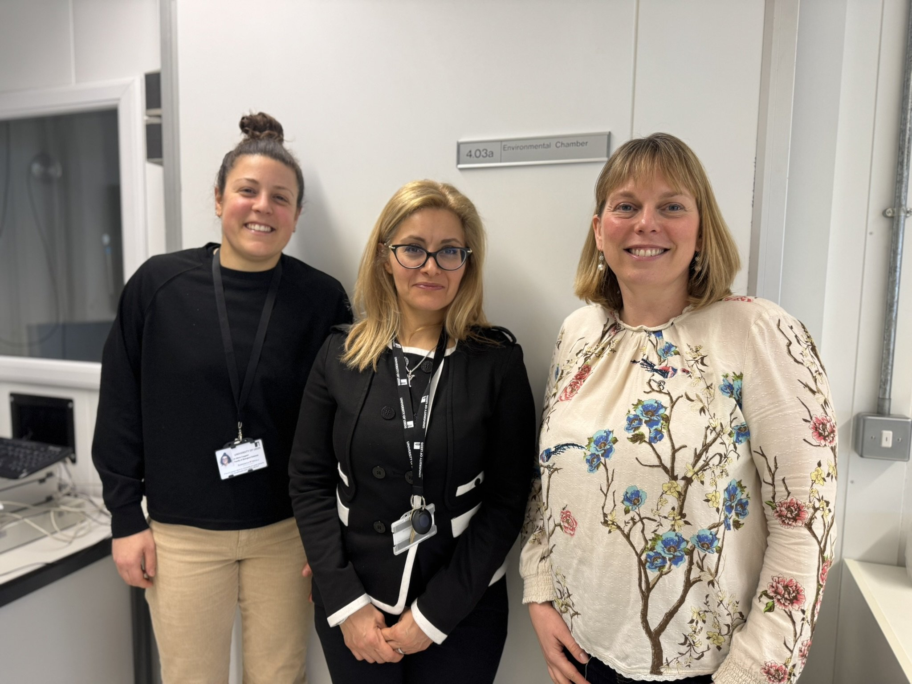
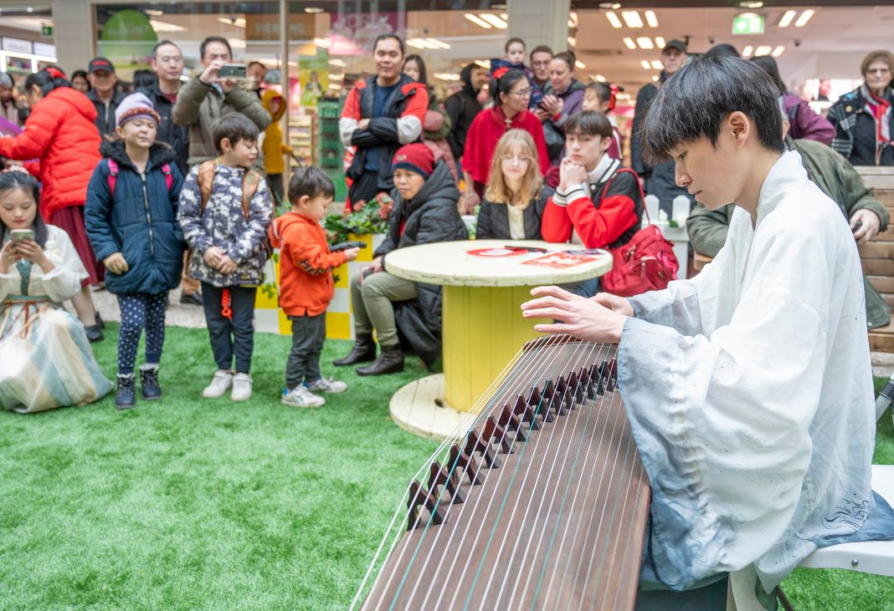
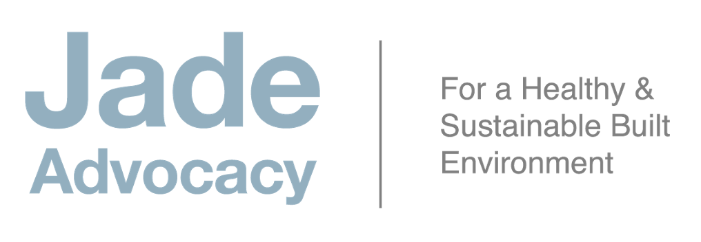
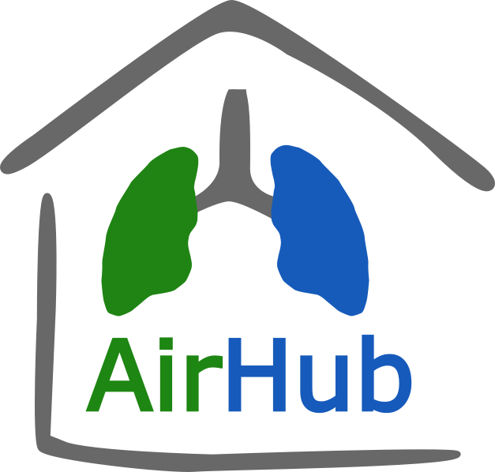
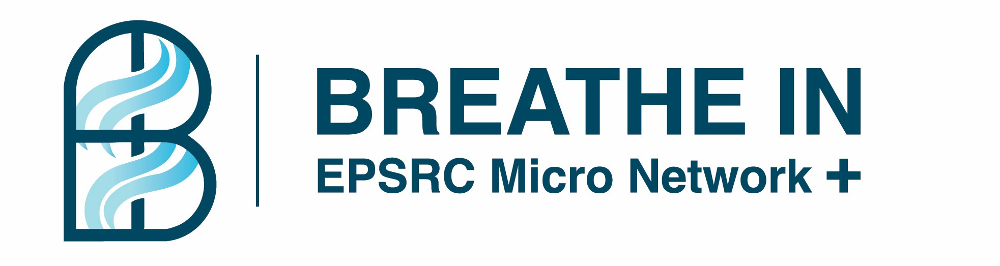
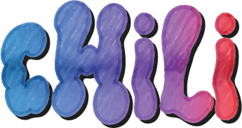
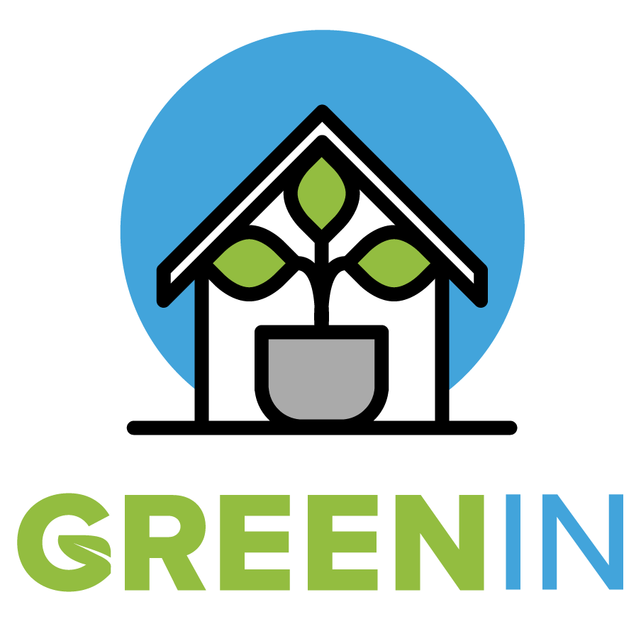
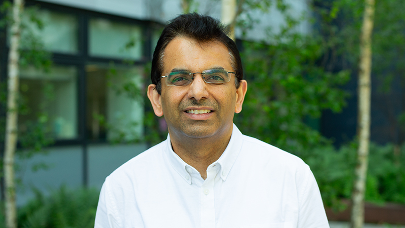

About the Event
The Healthy Buildings Network invites all members, affiliated researchers, and partners to its annual Showcase Event. This is an opportunity to celebrate the outputs of our funded research, hear from leading voices in healthy-building science, and shape the future direction of the network.
Keynote Talks
Leading researchers on healthy buildings
8 Project Talks
4 Pump-Priming + 4 ECR presentations
Panel Discussion
Future priorities for the network
Networking
Cross-disciplinary connections
Organised by

University of Leeds
Funded by
Keynote Speaker
UCL Institute for Environmental Design and Engineering (IEDE)
Marcella Ucci is a Professor at UCL's Institute for Environmental Design and Engineering (IEDE) at The Bartlett. Her research spans indoor environmental quality, ventilation, building-related health, and the interplay between building design and occupant wellbeing. She has contributed to major interdisciplinary projects linking energy efficiency with health outcomes in buildings and has advised on national guidance around indoor air quality and healthy building design.
Research Interests
Keynote Address
"Five Questions about Healthy Buildings: Shifting our Mindsets"
Thursday, 2nd July 2026 • 10:15 AM
Funded Research Projects
The HBN has funded 8 interdisciplinary research projects through two competitive funding streams. Principal investigators will present their progress and findings during the showcase.
Green Roofs & Biodiversity
Living in Clover
Prof. Gleb Yakubov
Exploring clover as a versatile and sustainable living roof option. Beyond traditional green roof benefits of insulation and carbon capture, the team investigates how clover's nitrogen-fixing qualities can support pollinators, boost soil health, and serve as a potential protein source — creating multifunctional rooftop spaces that enhance urban biodiversity and promote circular-economy principles.

Thermal Comfort & Ageing
ThermoAge
Dr Sally Shahzad
Examining how exposure to cold or heat extremes indoors affects posture, muscle function, and fall risk in older adults. By combining controlled climate chamber sessions, biomechanical monitoring, and occupant diaries, the study identifies threshold indoor temperatures where balance and safety may be significantly compromised.
Human-Centred Housing
Human-Centred Housing: Evidence-Based Design
Dr Alexa Ruppertsberg
Bridging the gap between compliance-focused housing standards and the real-world needs of residents. By integrating technical regulations with Post-Occupancy Evaluation (POE) data, this project embeds occupant wellbeing, health, and happiness into the design process — collaborating with developers, policymakers, architects, and residents.
Indoor–Outdoor Air: Passive Houses Study
Prof. Alison Tomlin & Dr Douglas Booker
Investigating how airtight, energy-efficient Passive House designs influence indoor and outdoor air quality. The project monitors pollutants including NOx, CO2, PM2.5, and ultrafine particles, correlating them with occupant behaviour and ventilation practices.
Human-Centred Housing (pump-priming) will present in this afternoon session alongside the four ECR projects.

Music & Community Spaces
Sonic Belonging: Co-Designing Community Music Spaces
PI: Mr Lijun Zhang
CoIs: Prof. Lynda Song, Dr Aiqin Liu, Dr Xunnan Li
🎵 Sonic Belonging update – April 2026 We're busy preparing our community workshop, which will bring together Leeds residents, musicians, and researchers. Our focus is on how shared spaces can be designed to support culturally inclusive music activities – from comfortable seating and acoustics that welcome diverse traditions, to simple ways of encouraging gentle movement. The workshop will shape a 'Community Brief for Active Music Spaces', helping architects and planners create buildings that truly support well‑being, inclusion and participation.
Child-Friendly Environments Through Healthy Buildings
PI: Dr Rodrigo Juárez
CoIs: Dewi Anwar, Yanya Tan, Karen Arzate Quintanilla, Yue Che, Joanne Michael
We are currently planning a seminar that explores how child-friendly green spaces can support children's health, resilience, and everyday lives. We are planning an exciting event that will bring together researchers, practitioners, policymakers, and communities to shares ideas and voices across sectors and generations. We are currently recruiting participants and defining the venue. Stay tuned for further information!

Infection Transmission in Indoor Settings
Joint PIs: Xiaoxuan Qin & Marcus Marshall
A multidisciplinary mini-symposium bringing together researchers working on airborne, surface-based, and behaviour-mediated transmission to improve understanding of multi-route infection risks in healthy buildings. Connecting perspectives from environmental microbiology, fluid dynamics, and quantitative modelling to identify cross-disciplinary challenges and build new research links.
Indoor Microbiome
Healthy Buildings, Healthy Microbiome
PI: Dr Suparna Mitra
CoI: Dr Paula Avello
An interdisciplinary mini-symposium exploring the complex relationship between indoor microbial communities and building health. Connecting perspectives from environmental microbiology, building science, and public health to examine how our buildings shape microbial ecosystems and what this means for occupant wellbeing.
Top 10 Questions in the Future of Healthy Building Research
A moderated panel discussion bringing together leaders from seven UK healthy-building research networks to debate the most pressing open questions shaping the field.
Each panellist will lead on one question drawn from their network's expertise, before the floor opens for cross-network debate and audience participation.
Your Moderator
Jade Lewis

Chief Executive, Jade Advocacy
Chair, Healthy Homes and Buildings Group · Secretariat, APPG for Healthy Homes and Buildings
A high-profile advocate for a more energy-efficient, healthy, and sustainable built environment. Jade chairs the Healthy Homes and Buildings Group, the West Midlands Combined Authority Energy Capital Board, and the Board of Trustees of the National Energy Foundation. She also provides secretariat services for the All-Party Parliamentary Group for Healthy Homes and Buildings and the British Energy Efficiency Federation. Previously Chief Executive of the Sustainable Energy Association and Director of Advocacy at Saint-Gobain.
Meet the Panellists
Doug Booker
University of Leeds
Abigail Hathway
University of Sheffield

Christian Pfrang
University of Birmingham

Marcella Ucci
UCL
Dejan Mumovic
UCL

Akash Biswal
University of Surrey


Rajat Gupta
Oxford Brookes University

Questions Shaping the Discussion
Registered attendees submitted their most pressing questions ahead of the event. These eight themes will anchor the panel discussion.
Translation Gap
We already have strong evidence linking indoor environments to health, yet adoption of healthy building innovations remains slow. What are the biggest barriers to implementation — and how do we accelerate the translation of research into real-world practice?
Health Equity
How can we design buildings that actively reduce health inequalities — and how do we co-produce healthy buildings with the communities most affected by poor-quality housing?
Standards & Measurement
What would it take to create a nationally consistent "healthy buildings score"? What percentage of UK buildings currently fall below a healthy standard — and what is the cost, in lives and money, of inaction?
Everyday Air Quality
How should a typical householder — without specialist measuring tools — know when their indoor air is worse than outdoors? What does genuinely useful, consistent public messaging around ventilation and air quality look like?
Affordability & Retrofit
What are the most cost-effective interventions for making buildings healthier? How do we make clean heating genuinely affordable for households in fuel poverty — and persuade landlords to act?
Ageing & Diverse Needs
How do we design healthy buildings for older people who want to age in place — and for those with multiple intersecting health conditions and comorbidities? Should "one-size-fits-all" standards even exist?
People & Planet
How can we reconcile the competing demands of energy efficiency, climate resilience, and indoor air quality in future building standards and retrofits — and make buildings that are genuinely healthy for people AND the planet?
Technology Adoption
Real-time IAQ monitoring, smart ventilation, and AI-driven building controls already exist. What needs to happen — across industry, policy, and research — to accelerate their adoption in homes and buildings?
Questions submitted anonymously by registered attendees via MS Forms · June 2026
Programme
Full programme for the day.
Thursday, 2nd July 2026
University House, University of Leeds
Programme subject to change. Last updated: 26th of June 2026.
Venue
University House, Woodhouse Suite.
University of Leeds, Leeds LS2 9JT, UK
Accessibility: The venue has accessible facilities, natural lighting and a lift. Please let us know of any specific requirements when registering.
Registration
Registration is now closed.
We look forward to welcoming our registered guests on 2 July 2026.
Contact
For any questions about the Showcase Event, please get in touch: